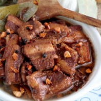

Adobo Recipe

Simmered low and slow, the pork belly will literally melt in your mouth.
Ingredients
- 600g thick pork belly
- 1/2 cup soy sauce
- 1/2 cup vinegar
- 1 tbsp brown sugar
- 20 cloves of garlic
- 1 slice of ginger
- 1 tbsp whole black peppercorns
- 5 bay leaves
- 1/2 cup water (omit water if using pressure cooker)
- Jasmine rice to serve with
- 1 tbsp neutral oil
Steps
- Cut the pork belly into sizeable chunks. I like to have it 4cm width and 3cm thickness but cut to your liking. (Cutting it smaller will reduce the cooking time)
- Prepare a large dutch oven or skillet. On high heat, drizzle in neutral oil and sear the pork belly until light golden brown on each side.
- Take the pork belly out and lower the heat to a medium-low.
- Add the garlic, ginger, and black peppercorns. Stir to bloom the spices and aromatics, or until the garlic has turned to a pale golden color.
- Add the soy sauce, vinegar, and brown sugar to simmer.
- Add the bay leaves and the pork belly into the mixture. Heat on high if the mixture has stopped simmer and turn the heat back to low on a rolling simmer.
- Prepare parchment paper and cut a hole in the middle. Place the parchment paper on top of the liquid. This method is called cartouche and it is extremely effective at controlling the amount of liquid evaporated and ensuring that the pork belly is submerged and tender at all times. You can also leave the lid slightly ajar!
- Simmer on low heat for 1 hour. Alternatively, stick it in a preheated oven at 325F/ 165C for 1 hour and 30 minutes. You can also use a pressure cooker without the water for 15 minutes on high pressure and 5 minutes rest before releasing the steam.
- Serve on top of jasmine rice and enjoy!